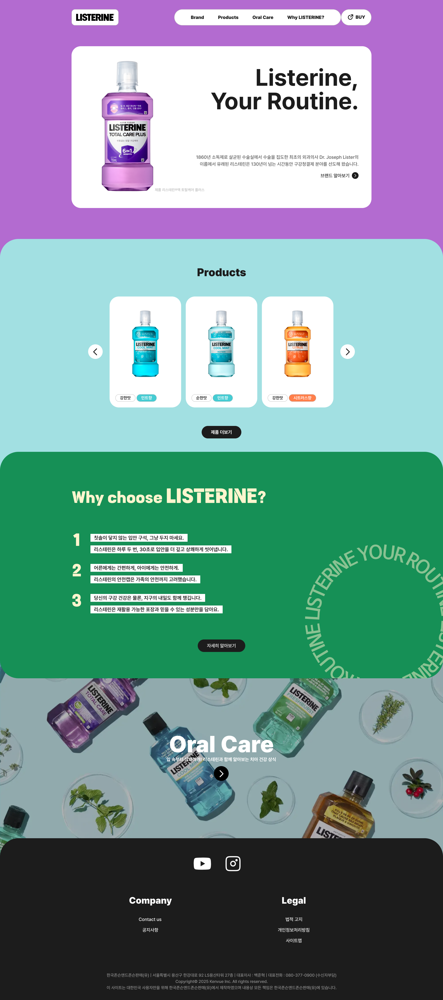
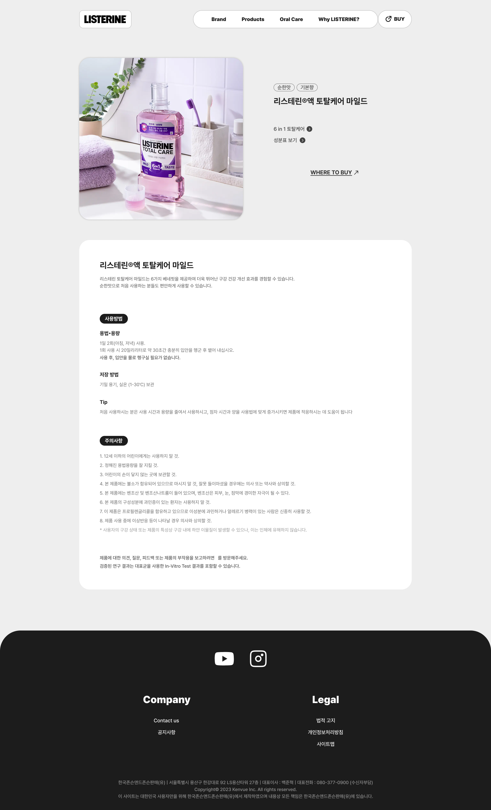

리스테린 메인
-
Duration
10 days
-
Tool
Figma, VSCode
-
Contribution
100%
리스테린(Listerine)은 전 세계적으로 가장 널리 알려진 구강청결제 브랜드 중 하나로, 입 냄새 제거와 잇몸 건강 유지, 치석 및 플라크 감소 등 구강 건강 전반을 효과적으로 관리할 수 있는 다양한 제품을 제공합니다.
그러나 기존의 리스테린 한국 웹사이트는 브랜드의 명성에 비해 다소관리가 부족하다는 느낌을 받았습니다. 이런 부분을 보완하고자 리스테린이 지닌 글로벌 브랜드의 신뢰성과 에너지를 유지하면서도 한층 더 트렌디하고 깔끔한 인상을 줄 수 있는 방향으로 웹사이트 리디자인을 기획했습니다.
디자인가이드 컬러부분
컬러 간의 대비와 균형을 통해 디자인의 완성도를 높이는 동시에, 시각적인 집중도를 강화하여 사용자가 브랜드 아이덴티티를 직관적으로 느낄 수 있도록 하였습니다.
-
#b36bd0
hexadecimal code -
#a2e0e2
hexadecimal code -
#169056
hexadecimal code -
#1c1c1c
hexadecimal code -
#ffffff
hexadecimal code
디자인가이드 폰트부분
Detail
디자인 전반에는 Pretendard 폰트를 적용하여 가독성과 일관성을 확보하고 브랜드의 신뢰성과 전문성을 강화하였습니다. 동시에 포인트 영역에는 Tenada 폰트를 사용하여 시각적 강조와 개성을 부여함으로써, 전체적인 디자인의 완성도를 높였습니다.
Title
- Tenada 72px
- Pretendard SemiBold 32px
Body
- Pretendard Bold 32px
- Pretendard Medium 18px
디자인컨셉
기존 내비게이션 바에 길게 나열되어 있던 메뉴 구조를 간결하게 재정리하여 정보 접근성을 높이고, 전체적으로 깔끔한 인상을 주도록 개선했습니다. 메인 페이지의 첫 화면에는 리스테린의 캠페인 문구 중 하나인 “Listerine, Your Routine”을 배치하여 브랜드 메시지를 직관적으로 전달하고, 자연스럽게 시선을 집중시킬 수 있도록 구성했습니다. 또한 동적인 인터랙션 효과를 더해 생동감을 주었으며, 반응형 디자인을 적용해 다양한 디바이스 환경에서도 일관된 사용자 경험을 제공할 수 있도록 했습니다.
UIUX
- 

- 